Gesamtwertung
Hall of Fame
Ewige Tabelle
| Rang | Teilnehmer | Punkte |
|---|
2002/03 zählt die Managerspielwertung. Danach zählen die Ränge der Gesamtwertung. Der Durchschnitt berücksichtigt alle dokumentierten Teilnahmen.
Meisterschaften
Sortiert nach Gesamttiteln
| Teilnehmer |
|---|
Geteilte Titel zählen für beide Sieger. 2002/03 zählt nur als Managerspieltitel, da es noch keine Gesamtwertung gab. Bei gleicher Titelzahl stehen die Namen alphabetisch.
Besondere Bestmarken
Saisonarchiv
| Rang | Teilnehmer | Punkte |
|---|
Punkte für die Ewige Tabelle
Rang 1 erhält 10 Punkte, Rang 2 erhält 8, danach sinkt die Vergabe je Rang um einen Punkt bis auf 0. Bei Punktgleichheit gilt derselbe Rang; die folgenden Plätze werden entsprechend übersprungen.
25 Jahre Tasmania
Meilensteine
Unsere Runde. Unsere Erinnerungen.-
2002
Sechs Tasmanen zum Start
Patrick, Alex, Björn, Kai, Marcus und Marius bilden die Gründungsrunde von Tasmania Hackentrick. Gespielt wird zunächst nur das Managerspiel – den ersten Titel holt Marius. Am 8. Juli 2003 hält Patrick den ersten Endstand im Forum fest.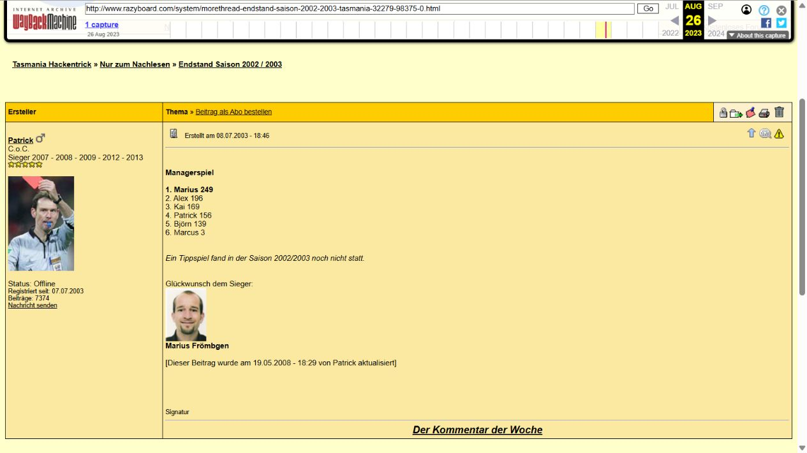
Endstand 2002/03 · Beitrag vom 8. Juli 2003, Archivansicht vom 26. August 2023. Antippen zum Vergrößern. -
2003
Jan und Daniel kommen dazu
Die Runde wächst auf acht Mitspieler. Neu ist außerdem das Tippspiel – neben den beiden Einzelwertungen gibt es nun auch eine gemeinsame Gesamtwertung. Kai gewinnt die erste gemeinsame Gesamtwertung und das Tippspiel. Im Managerspiel wird er Zweiter.
Kais Siegerfoto · 2004 -
2004
Zusammen zum Saisonabschluss
Zu Tasmania gehören nicht nur Punkte und Tabellen, sondern auch die gemeinsamen Abschlusstreffen. Zusammenkommen, auf die Saison zurückblicken und einen guten Abend miteinander verbringen – am besten mit einem großartigen Fussballspiel.
Patrick, Björn und Marcus · Abschlusstreffen 2004 
Gemeinsam am Spielfeld · Saisonabschluss 2004 -
2005
Tim kommt dazu
Mit der Saison 2005/06 gehört auch Tim zur Runde.
Tim und Patrick · Abschlusstreffen 2008 -
2007
Seriensieger
Patrick gewinnt die Gesamtwertungen 2006/07, 2007/08 und 2008/09 und schafft damit den ersten „Three-peat“ in der Tasmanengeschichte.
Patricks Siegerfoto · 2007 -
2016
Simon kommt dazu
Mit der Saison 2016/17 gehört auch Simon zu Tasmania Hackentrick. Eine zweite „Causa“ löst er nicht aus – seinen ersten Gesamtsieg holt er erst 2023. Zum Saisonabschluss 2016/17 gibt es die Erstauflage von „Schlag den Tasmanen“ in der Rheinaue.
Schlag den Tasmanen · Rheinaue 2017 
Gruppenfoto zum Saisonabschluss 2017 -
2024
Patrick, unser C.o.C.
Patrick hat Tasmania ins Leben gerufen. Ohne ihn gäbe es unsere Runde und all die gemeinsamen Jahre nicht. Unvergessen bleiben seine MoKos: mit spitzer Zunge und großem Wortwitz geschrieben, mal launisch, mal ironisch, aber immer originell. 2024 mussten wir Abschied von ihm nehmen. Aber Patrick bleibt einer von uns – und für immer unser C.o.C.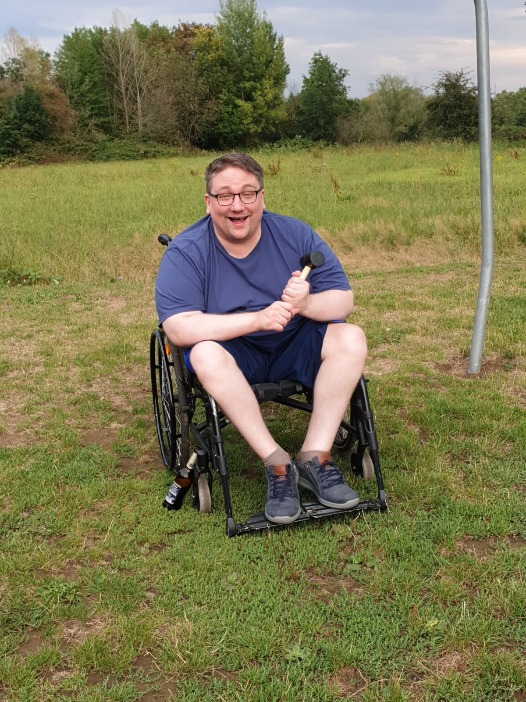
Patrick · 2020 -
2026
Tasmania auf Tour in Edinburgh
Gemeinsam unterwegs in Edinburgh – im Stadion und im Pub.
Easter Road Stadium · Edinburgh, März 2026 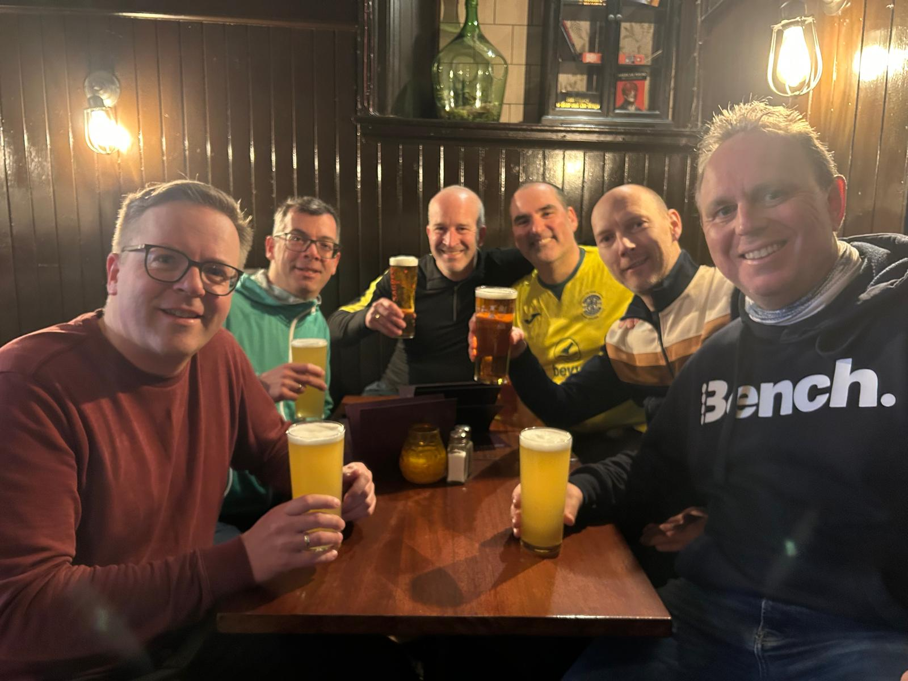
Gemeinsam im Pub · Edinburgh, März 2026 -
2026
Wer holt den Jubiläumstitel?
Die Jubiläumssaison läuft, der Ausgang ist offen. Wer gewinnt die Gesamtwertung und sichert sich einen besonderen Platz in der Tasmania-Geschichte?
Fotoalbum
Gruppenbilder über die Jahre · 2009–2025
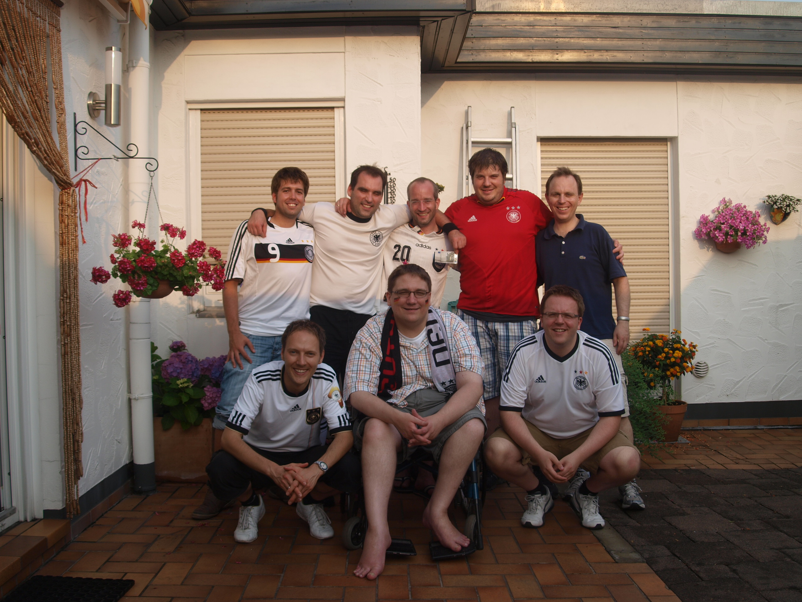
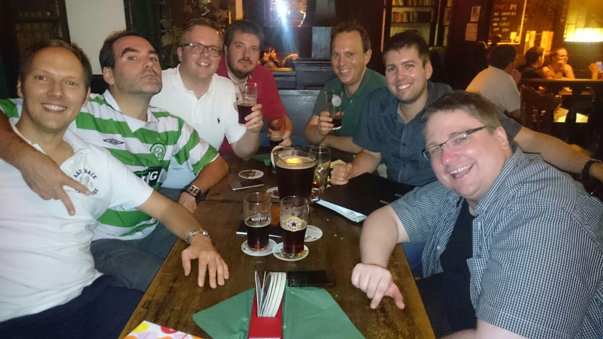
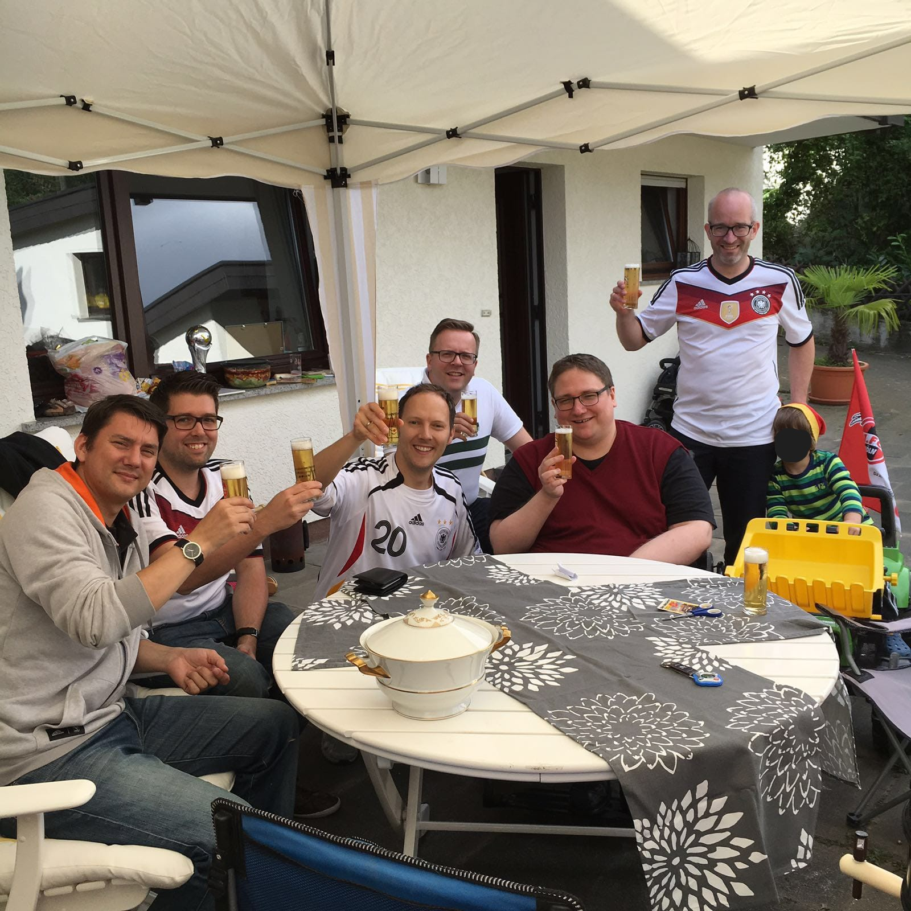
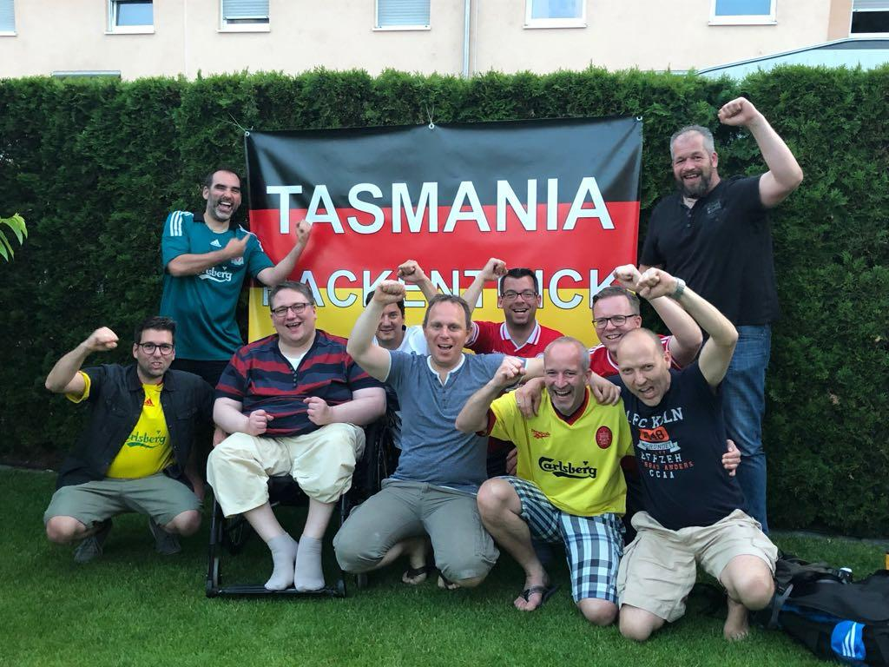
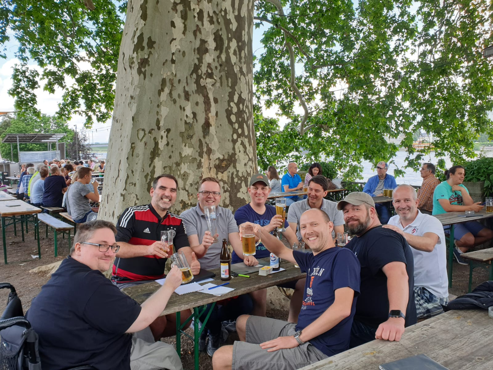
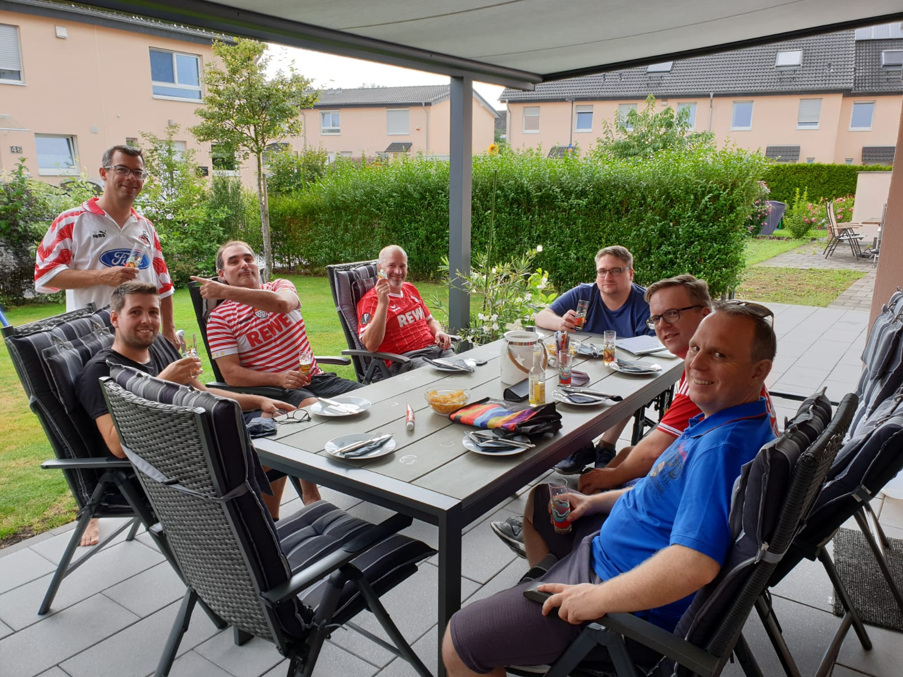
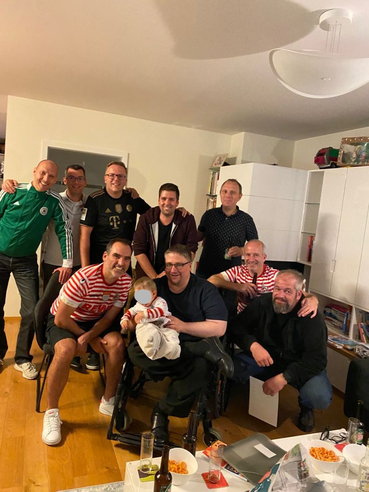
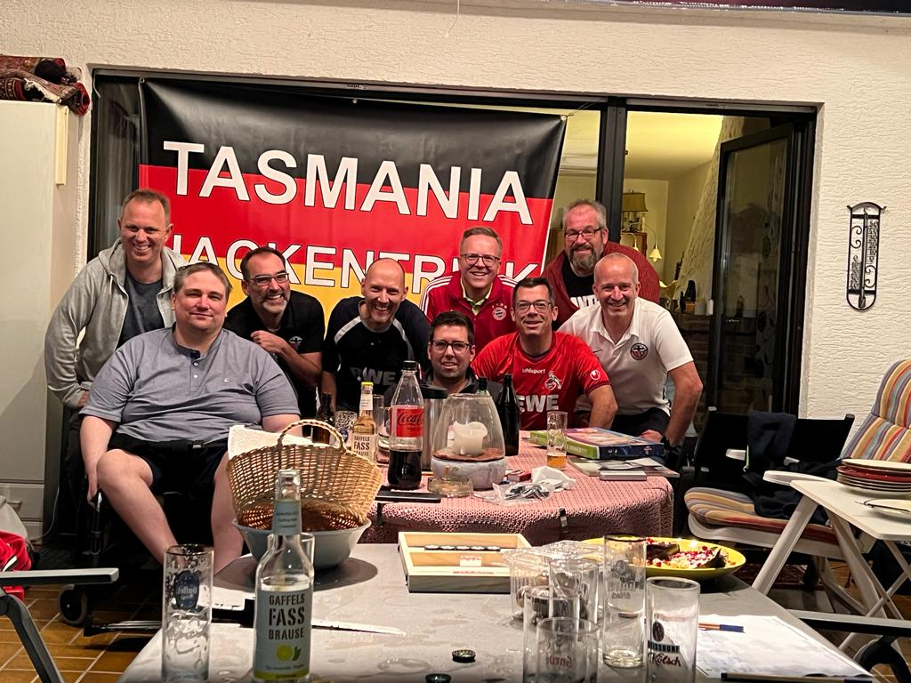
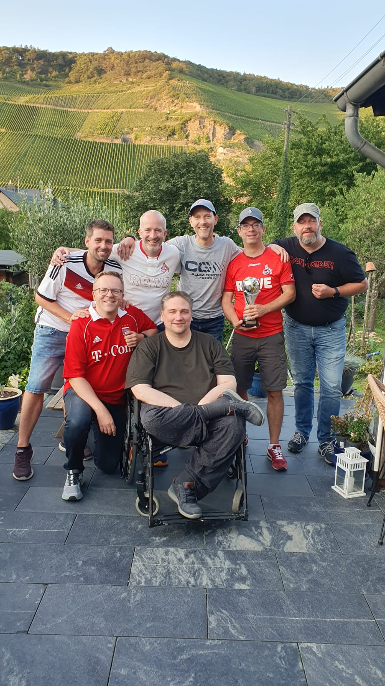
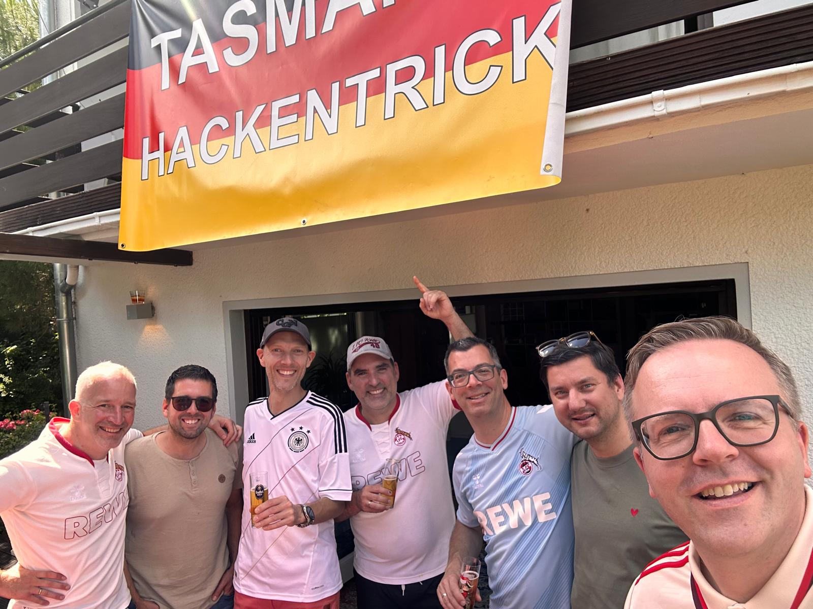